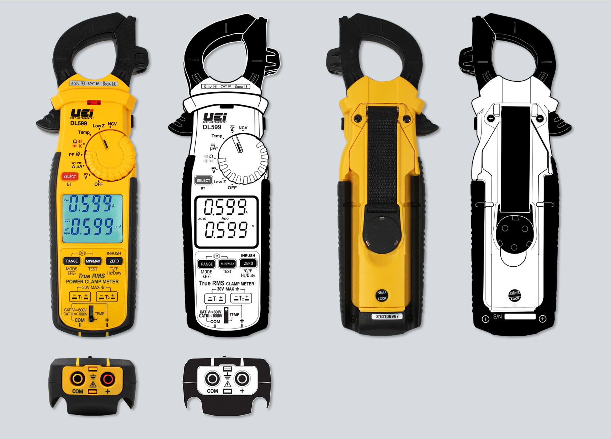
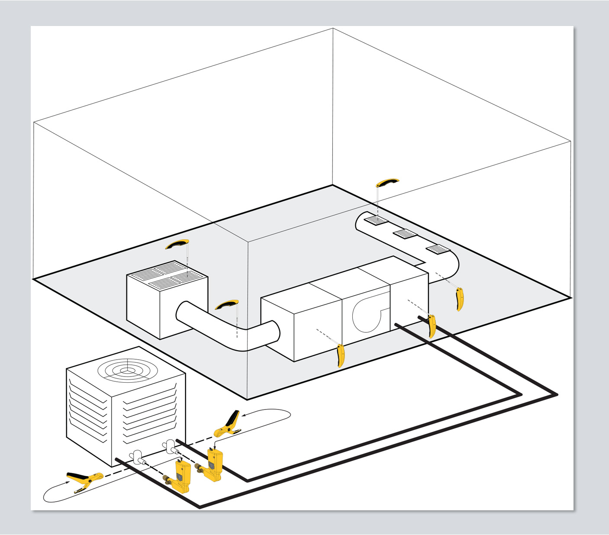
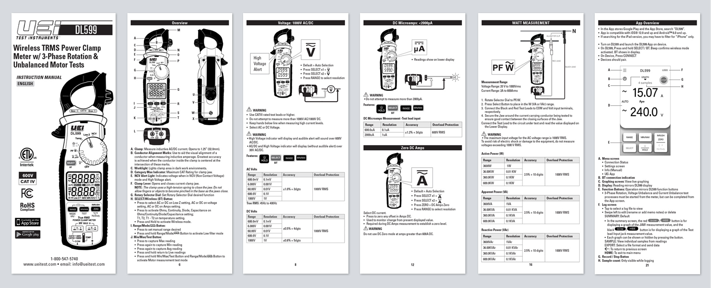

Technical Illustration
3,000+ precision vector illustrations produced across 100+ products and 130+ accessories — manuals, diagrams, and product documentation.

Overview
Precision at scale — 3,000+ illustrations. Every product. Every manual.
Every UEi product ships with an instruction manual. Every manual contains detailed technical illustrations — product views, parts callouts, measurement diagrams, connection schematics, and application diagrams. With 100+ products and 130+ accessories in the line, and an average of 15–25 illustrations per manual, the total illustration output across my tenure represents over 3,000 individual vector illustrations produced entirely in Adobe Illustrator.
These aren't decorative graphics. Technical illustrations for test instruments have to be dimensionally accurate, clearly labeled, and precise enough for a technician to follow in the field — often under pressure, in tight spaces, with safety implications. Every line, every callout letter, every connector symbol had to be correct.
Illustration Types
Three categories. One consistent standard.
The illustration work fell into three primary categories — each with its own technical requirements, level of detail, and end-use context. All were produced as scalable vector files in Adobe Illustrator, built to spec for both print (manuals, packaging inserts) and digital (website, PDF downloads).
The Process
From photo reference to production-ready vector.
Every product illustration started from photo reference — engineering samples, product photography, or actual units on my desk. Working in Adobe Illustrator, I built each view from scratch using precise anchor points, consistent stroke weights, and accurate label reproduction. No auto-trace shortcuts. Every path was drawn manually to ensure clean, scalable output.
The before/after below shows the DL599 Wireless TRMS Power Clamp Meter — photo reference on the left, finished vector illustration on the right — across front, back, and bottom views. The vector versions are the ones that appear in the product manual, on the website product page, and in any marketing material that references product anatomy.
DL599 Wireless TRMS Power Clamp Meter — photo reference (left columns) vs. finished vector illustration (right columns). Front, back, and bottom views.
Application Diagrams
Showing the product in context — not just on a white background.
Beyond product views and parts callouts, I produced application diagrams that showed UEi instruments being used in real HVAC/R environments. These isometric illustrations gave technicians and contractors a clear visual reference for where and how to use each instrument within a complete system — air handlers, ductwork, refrigerant lines, outdoor condenser units, and electrical connections all illustrated in a single scene.
These diagrams appeared on the website, in product literature, and in training materials — helping distributors and end users understand product application without requiring written explanation for every use case.

HVAC/R system application diagram — isometric vector illustration showing UEi instruments placed throughout a complete residential system. Adobe Illustrator.
In Use — Product Manuals
Every illustration in context — the finished manual.
The DL599 instruction manual below shows the complete illustration system at work — cover illustration, parts overview with lettered callouts, measurement mode diagrams, spec tables, and app overview screens, all produced and placed into a single cohesive document. Every illustration you see in this manual was created by me.
This is one manual for one product. Multiply that across 100+ products and 130+ accessories — each with its own unique form factor, feature set, and application context — and the cumulative scope of this work becomes clear. Every UEi product in the field today ships with a manual illustrated to this standard.

DL599 Wireless TRMS Power Clamp Meter instruction manual — cover, parts overview, voltage diagrams, DC microamps, watt measurement, and app overview. All illustrations produced in Adobe Illustrator.
The Result
A documentation standard that scales across an entire product line.
The illustration system I built and maintained gave UEi a consistent, professional documentation standard across every product — ensuring that every technician who opens a UEi manual sees clear, accurate, well-organized visual guidance from the first page to the last.
Beyond accuracy, the consistency matters. When every manual looks like it came from the same hand, the brand feels more trustworthy. Distributors notice. Contractors notice. And when a technician can find what they need in a manual quickly — because the illustration is clear and the callout system is logical — that's good UX applied to technical documentation.
This work also directly supported the packaging, website, and marketing systems — the same vector illustrations produced for manuals were reused across product pages, data sheets, catalog ads, and tradeshow materials, creating a unified visual language across every customer touchpoint.